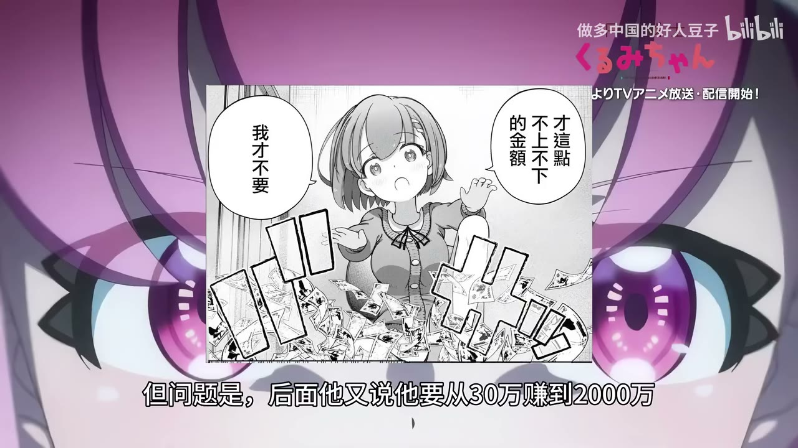

原视频 · 在线回看
点击后联网加载 B 站播放器；本地不下载整段视频。

原视频 · 在线回看
点击后联网加载 B 站播放器；本地不下载整段视频。
来源：【FX战士久留美】锐评久留美首次交易行为，专业交易者角度解析久留美动画
UP 主：做多中国的好人豆子 时长：11 分 53 秒 链接：https://www.bilibili.com/video/BV1eaaL6EEZT/ 阅读强度：standard
久留美攒下30万日元，准备开始做外汇交易。FX（外汇保证金交易）是根据汇率变化买入或卖出货币，希望在价格变化后获利。动画里的久留美知道汇率会受国际局势和经济影响，准确预测很难；豆子接着追问：如果她不认为自己能预测市场，究竟靠什么方法获得稳定收益？
杠杆是用一部分本金控制更大规模的交易仓位。这样，汇率只动一点，盈亏也会按放大的仓位计算；价格朝相反方向变化时，亏损同样被放大。杠杆提高了潜在收益和损失的速度，并不会自动替交易者找到正确方向或创造稳定优势。外汇保证金与杠杆的基础说明
久留美的思路是少赚一点来提高胜率，同时把止盈点设得近、止损点放得远。止盈点是达到预定盈利时离场，止损点是亏损达到预定范围时退出。这样安排，很多次小盈利有机会遮住偶尔的大亏，但关键还要看平均每次赚多少、亏多少，以及交易成本。假如每次盈利都很小、止损却吞掉多次盈利，即使多数交易获胜，累计结果也可能为负。
用一组简化数字就能看清这个关系。假设十笔交易中八笔各赚100元，两笔各亏500元；先不计手续费：
| 结果 | 次数与金额 | 合计 |
|---|---|---|
| 盈利 | 8次 × 100元 | +800元 |
| 亏损 | 2次 × 500元 | −1,000元 |
| 总结果 | 胜率80% | −200元 |
这组数字只是解释胜率与盈亏幅度的关系，并非角色的实际账户记录。八次“猜对”仍然抵不过两次大亏；判断一套方法时，要把获胜频率和每次输赢的金额一起看。
她还计划从30万日元做到两千万日元，约为本金的66倍，并打算用杠杆更高的海外平台。这里出现了目标与方法之间的落差：小幅盈利来增加胜率，与短期做到66倍回报，要求的风险和持续表现完全不同。杠杆会放大仓位相对本金的规模，汇率小幅波动也会造成较大的盈亏；杠杆越高，能承受的反向波动就越小。
豆子用“优势”来检验这项策略：交易者凭什么长期赚到钱？他指出，久留美没有解释自己的判断比市场其他参与者强在哪里，也没有给出能持续重复的交易方法。短时间赚钱或某一笔交易获利，只能说明那次结果为正，无法证明方法长期具有优势。目标如果真能通过一个策略稳定实现，资金从30万扩大到两千万之后，理论上还可以继续复制；因此，66倍的短期目标远超“赚点小钱”的描述。
豆子进一步把交易结果拆成长期条件：如果一套方法扣除成本后持续有正收益，仓位大小会影响承担的风险；如果方法本身长期为负，缩小仓位也不能把它变成盈利策略。这是他用来反驳“只要控制仓位就能控制风险”的理由。风险大小可以管理，策略是否有优势仍要单独回答。
片中久留美选择100倍以上的杠杆，并把本金全部投入。豆子提醒，重仓意味着账户几乎没有空间承受价格反向波动；一旦波动触及保证金限制，平台可能强制平仓，损失会很快逼近全部本金。具体平仓点要看平台规则和交易品种，片段没有提供这些细节，因此不能把某个精确亏损幅度套到所有FX账户上。
交易图使用五分钟K线，每根K线概括五分钟内价格变化。豆子据此指出，久留美在短短一根K线的时间里就承受很大心理压力。高杠杆把小幅波动放大，密集盯盘又让她迅速面对账面盈亏变化；二者叠加，让交易更像在短时间里押上全部本金。豆子拿澳门赌场的赌客作对比：他觉得即使是赌性很强的人，也未必会每五分钟把全部身家压上。
片中还出现五分钟赚到一千元人民币的交易结果，之后谈到汇率换算。单次盈利容易让人把短期收益和长期能力连在一起；豆子的批评针对的是风险结构与持续方法，不是把这次盈利当作整个账户的表现。看交易动画时，区分某一笔赚了多少钱、这套方法长期是否有优势、以及本金可能承受多大回撤，才能听清他为何仍然批评久留美的选择。
豆子提到，漫画里的久留美第一次交易赚到了钱，动画先行版则加入原创情节来制造悬念。他觉得动画改写更贴近现实：按久留美当时表现出的知识和高风险操作，第一次交易若遇到不利波动，亏损更符合风险结构。这里讨论的是角色设定与剧情改编；一次戏剧化盈利不能证明她的做法可靠，一次亏损也不能单独说明所有短线交易都会亏钱。
豆子还注意到，久留美觉得持续赚钱很枯燥，却有很强的执行力。他据此提出另一种个人看法：这样的人若愿意花几年学习、准备专业资格或发展工作技能，或许能通过职业收入逐步接近目标，不必寄望于一次短期暴利。这个建议来自对角色性格的解读；能否实现仍取决于个人能力、选择和现实条件。
这段点评关注的核心，是久留美的目标、胜率逻辑与风险承担能否相互匹配。小盈利配合更大的止损，未必形成正收益；100倍杠杆、满仓操作与五分钟交易周期叠加，会让小幅波动迅速影响本金。动画与漫画首次交易结果的不同，服务于戏剧情节，也让观众看见角色策略与现实风险之间的距离。